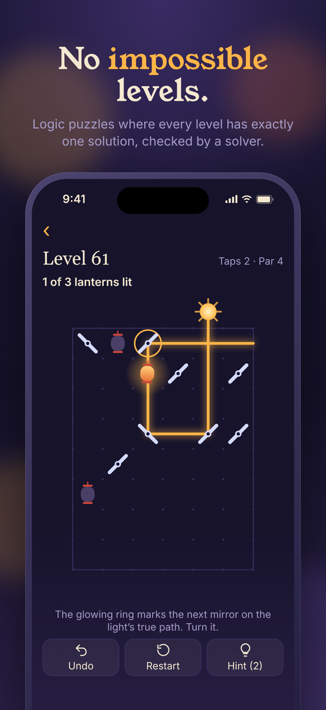
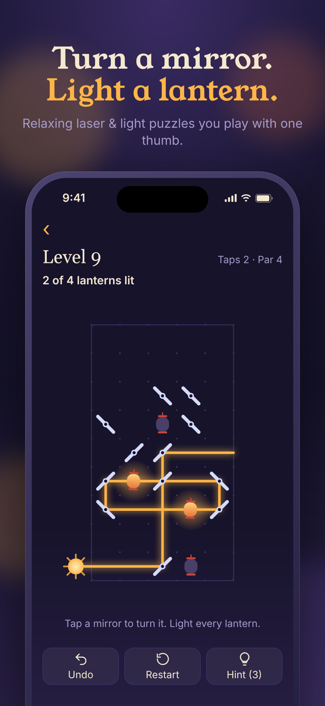
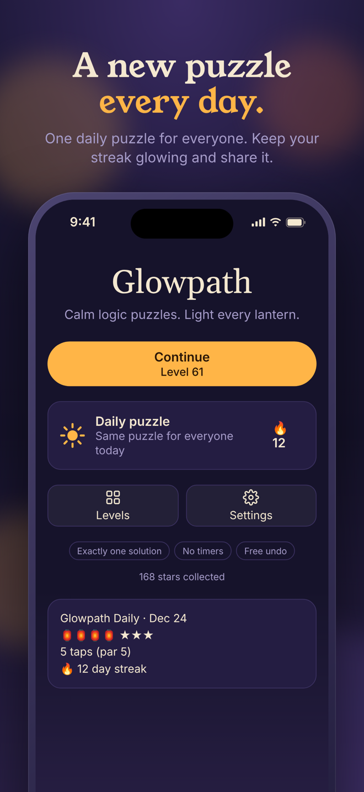

Lanternwise
Calm logic puzzles. Fair by design.
Turn a mirror. Light a lantern. Every one of Lanternwise's 2,000 levels is checked by a solver to have exactly one solution, so logic always gets you there. No timers, no lives, free undo, and a new daily puzzle for everyone.



Press kit
Fact sheet: iPhone · Free, no ads, optional one-time Supporter Pack ($9.99) · 2,000 solver-verified levels · daily puzzle, streaks, widgets · offline · VoiceOver, high contrast, Reduce Motion.
Icon, screenshots and App Preview: available on request. Contact: oleksandra.fenenko@gmail.com